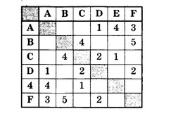
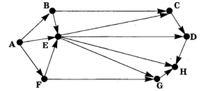
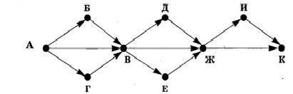
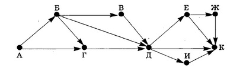
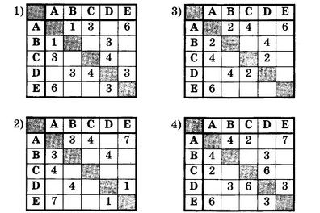
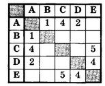
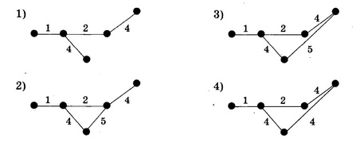
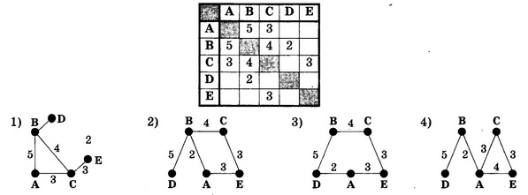
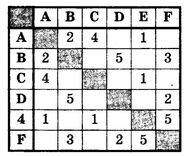
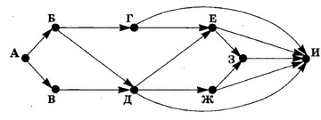

| 1 |
Между городами А, В, C, D, E, F проложены дороги, протяжённость которых указана в таблице. Определите длину кратчайшего пути между городами А и В (передвигаться можно только по имеющимся дорогам). |
|||
| 1) 6 | 2) 7 | 3) 8 | 4) 9 | |
| 2 |
На рисунке показана схема дорог между городами А, В, C, D, E, F, G, Н. По этим дорогам можно двигаться только в одном направлении, показанном стрелкой. Сколько возможно различных путей из города А в город Н?  |
|||
| 3 |
Дана схема дорог, связывающих города А, Б, В, Г, Д, Е, Ж, И, К. По дорогам можно двигаться только в одном направлении, указанном стрелкой. Сколько возможно различных путей из города А в город К?  |
|||
| 4 |
Дана схема дорог, связывающих города А, Б, В, Г, Д, Е, Ж, И, К. По дорогам можно двигаться только в одном направлении, указанном стрелкой. Сколько возможно различных путей из города А в город К?  |
|||
| 5 |
Числа, стоящие на пересечениях строк и столбцов таблиц, обозначают стоимость проезда между соответствующими соседними станциями. (Если число на пересечении какой-либо строки и столбца не указано, то соответствующие станции не являются соседними.) Стоимость проезда по некоторому маршруту вычисляется как сумма стоимостей проезда между соответствующими соседними станциями. Для какой из приведённых ниже таблиц выполняется условие: минимальная стоимость проезда по маршруту из Е в В не более 5?  |
|||
| 6 |
Есть четыре города: А, В, С и D. Между городами А и С проложено три дороги. Между городами С и В проложено две дороги. Между городами А и В проложено две дороги. Между городами С и D проложено две дороги. Между городами В и D проложено четыре дороги. По каждой дороге можно ехать в обе стороны. Сколько возможно способов проезда из А в D, посещая каждый город не более одного раза? |
|||
| 7 |
В таблице числа, записанные на пересечениях строк и столбцов, обозначают стоимость проезда между соответствующими соседними станциями. Если число не указано, то соответствующие станции не являются соседними. Какая из приведённых ниже схем соответствует таблице?   |
|||
| 8 |
В таблице приведена стоимость перевозки пассажиров между соседними населенными пунктами. Укажите схему, соответствующую таблице.  |
|||
| 9 |
Между населёнными пунктами А, В, C, D, E, F построены дороги, протяжённость которых приведена в таблице. (Отсутствие числа в таблице означает, что прямой дороги между пунктами нет.) Определите длину кратчайшего пути между пунктами А и F (при условии, что передвигаться можно только по построенным дорогам).  |
|||
| 10 |
На рисунке - схема дорог, связывающих города А, Б, В, Г, Д, Е, Ж, 3, И. По каждой дороге можно двигаться только в одном направлении, указанном стрелкой. Сколько существует различных путей из города А в город И?  |
|||
Результат:
Разработчики: Алев Борис